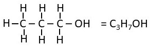

Academic Subjects
➤
Chemistry
➤
General Chemistry
➤
Composition
➤
O Atoms In 1 mole C
3
H
8
O
How many oxygen atoms are in one mole of propanol?

there is one O in propanol = 1 mole O
let's convert 1 mole O into atoms O
1
mole O
6.022 x 10
23
atoms
/
1
mole O
= 6.022 x 10
23
atoms O
There are 6.022 x 10
23
atoms O in 1 mole of propanol